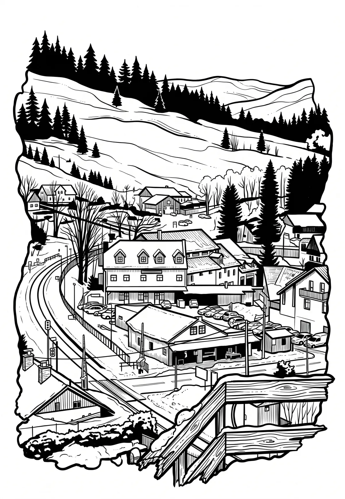

Železná Ruda
Železná Ruda (německy Markt Eisenstein) je malé město v okrese Klatovy v Plzeňském kraji, ležící na česko-německé hranici. Žije zde přibližně 1 600 obyvatel. Město se nachází na hranici Národního parku Šumava a je to jedno z šumavských sportovních a turistických středisek cestovního ruchu.
Více na Wikipedii